DIY Drone MVP
Overview
This week marks the first physical MVP of the DIY drone project. The goal is to build a cheap, mostly 3D-printed quadrotor from scratch — minimising off-the-shelf assemblies in favour of understanding every subsystem through direct experimentation.
To maximise iteration speed, I deliberately chose a very small form factor: with prints at this scale taking at most 10 minutes each, the design-print-test loop becomes nearly instant. Everything that can be 3D printed is 3D printed, and hardware is only ordered when absolutely necessary.
3D-Printed Frame
I designed and printed a minimal quadrotor frame sized around the smallest brushless motors I could source. The cross geometry keeps the design rigid despite its tiny footprint, and the pair of mounting holes on each arm allow motor bolts to be seated with a small standoff to clear the printed material.
Interactive 3D Model
Click and drag to rotate • Scroll to zoom • Right-click drag to pan
Prusa Slicer
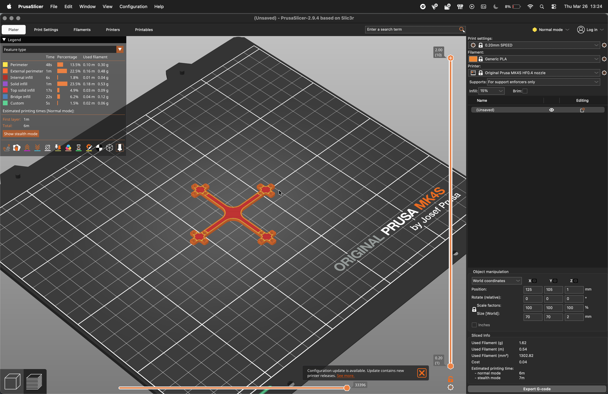
Prusa slicer layout for the frame print
Printed Result
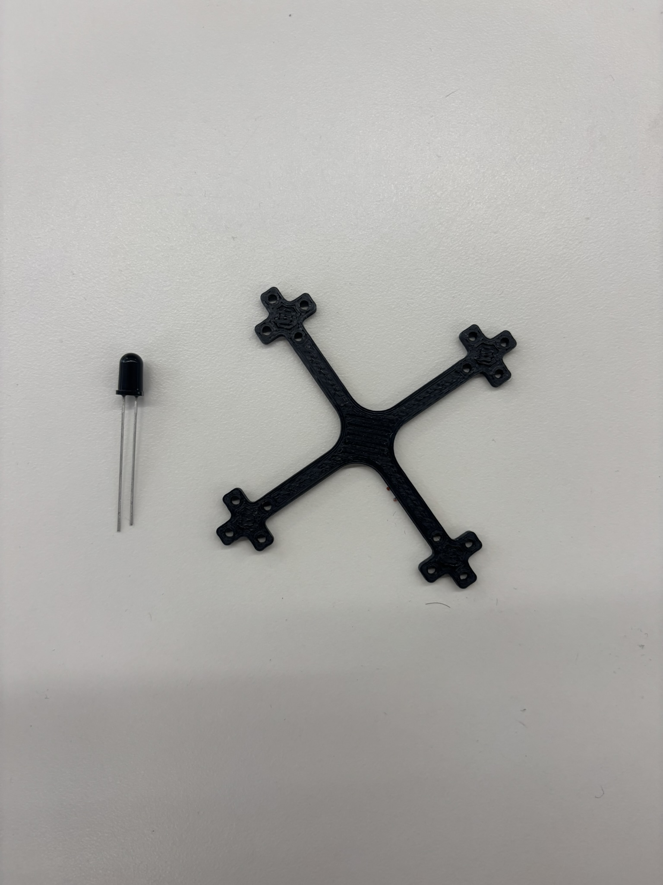
The printed frame — Diameter: 70 mm | Hole diameter: 2 mm | Thickness: 2 mm | Distance between pair of holes on each cross: 9 mm
Brushless Motors ARRIVING SATURDAY
The frame was designed around a specific micro brushless motor: the DarwinFPV Baby Ape / Pro 3" — 1104. These motors have not yet arrived (expected Saturday) but the mounting hole geometry on the frame is already matched to their bolt pattern.
Motor Specifications
| Parameter | Value |
|---|---|
| Motor size | 1104 (11 mm stator diameter, 4 mm stator height) |
| KV rating | 7500 KV (recommended for 2S) / 4500 KV (3S) |
| Propeller compatibility | 2.5″ – 3″ |
| No-load current (I₀) | ≈ 0.5 A |
| Max thrust (2S, 3" prop) | ≈ 100 g per motor |
| Max continuous current | 6 A |
| Peak current | 8 A |
| Shaft diameter | 1.5 mm |
| Mounting pattern | M2, 9 mm × 9 mm |
| Motor weight | ≈ 5.5 g |
| Recommended battery | 2S – 3S LiPo / LiHV |
| Recommended ESC | 8–10 A BLHeli_S or AM32 |
The 1104 form factor is one of the smallest classes of brushless motors used in FPV micro-quads. The high KV rating (7500 on 2S) pairs well with lightweight 3-inch propellers and a sub-100 g airframe, making it ideal for rapid indoor prototyping at this scale.
3D-Printed Propellers
While waiting for the motors, I also attempted to print the propellers. Finding propellers small enough for a 70 mm frame is genuinely difficult — most commercial props start at 2.5″ and are designed for stiffer materials. I printed two iterations, both of which are not quite usable in practice: the Prusa MK4 lacks the resolution to reproduce the thin trailing edge of a blade accurately, leading to uneven geometry that would produce vibration and asymmetric thrust.
The most likely path forward is to order purpose-made micro propellers online rather than continue printing them. The geometry is too fine for FDM at this scale.
Printed Props
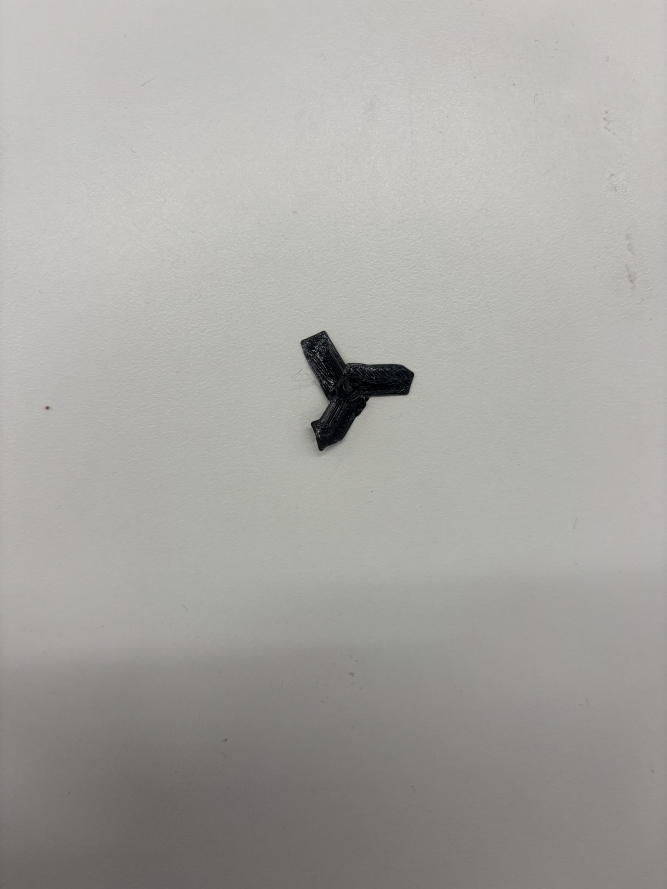
Propeller attempt 1
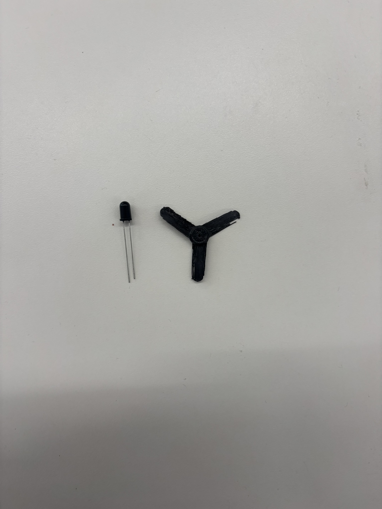
Propeller attempt 2
Prusa Slicer
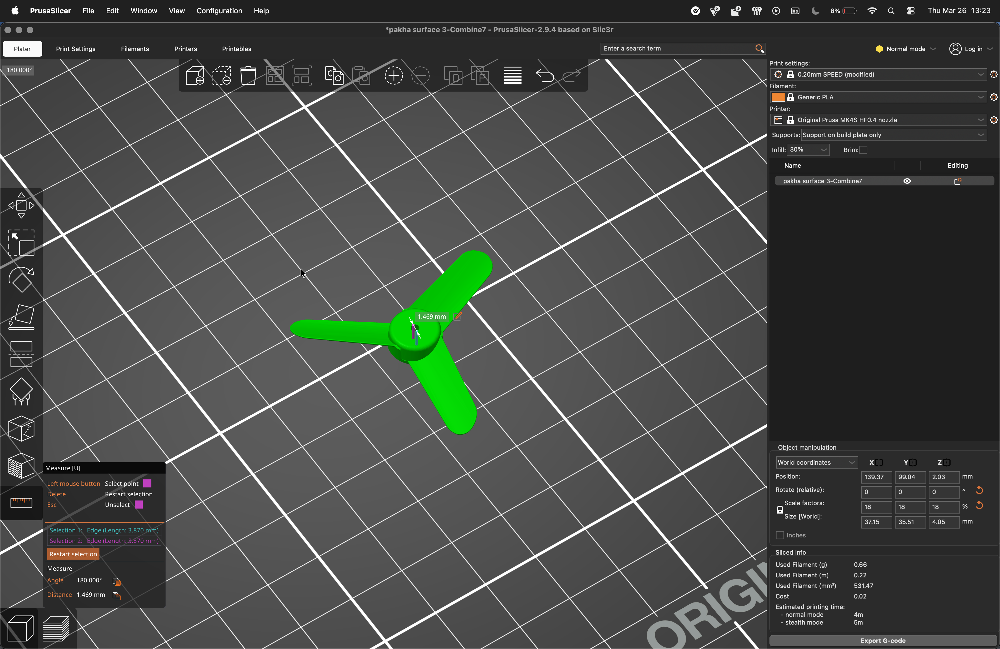
Prusa slicer layout for the propeller print
Interactive 3D Model
Click and drag to rotate • Scroll to zoom • Right-click drag to pan
Control UI & Motor Testing
Because the brushless motors have not arrived yet, I used the stepper motors from the Useless Box (previous week) as stand-ins to validate the control software end-to-end. This let me test the full communication stack — ESP32 firmware, Wi-Fi hosting, and browser UI — without being blocked on hardware delivery.
Architecture
The website is hosted directly on the ESP32 microcontroller. The ESP32 creates its
own Wi-Fi access point (SSID: DroneControl); connecting to this network
and opening the ESP32's IP in a browser loads the full control interface. No external
server is involved — the ESP32 is both the network host and the motor controller.
Control Interface
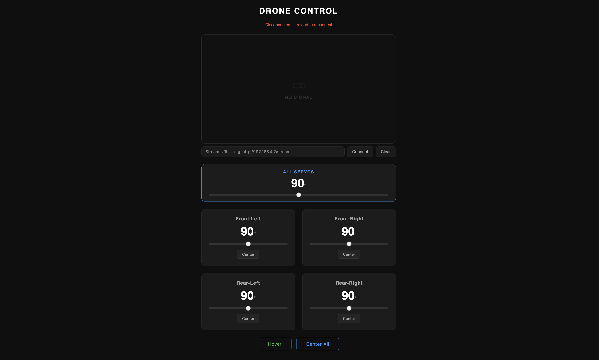
Control UI served by the ESP32 — accessed by connecting to the
DroneControl Wi-Fi network
The interface is divided into several zones:
- FPV feed frame — the top area is reserved for a live video stream. This will be fed by an ESP32-CAM module in a future iteration, providing a first-person view directly in the browser without any additional app.
- Individual motor sliders — each of the four motors can be controlled independently, useful for diagnosing asymmetric thrust or testing a single motor after re-assembly.
- All-motors control — a master slider / input that sets all four motors simultaneously to the same throttle level.
- Hover mode — a toggle that puts all motors into a continuous run state at a fixed throttle setpoint, simulating a steady hover without requiring constant input.
Motor Test Videos
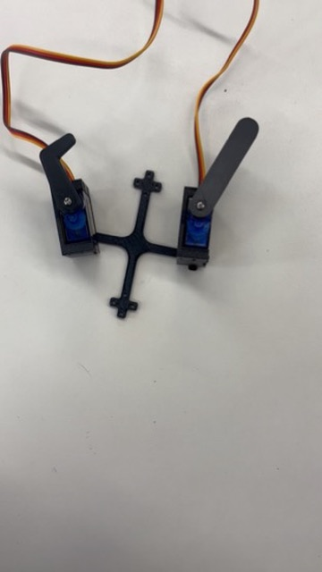
Hover mode — all motors running continuously
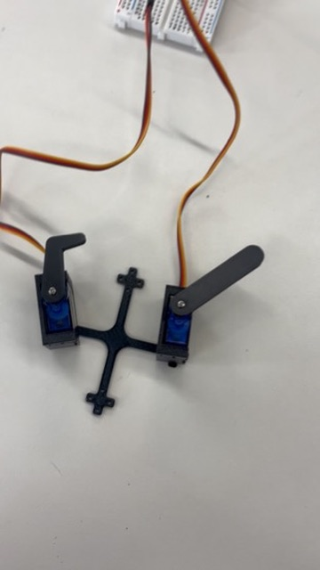
Individual motor control via the UI
Firmware
Three firmware modules run on the ESP32. Each is responsible for a distinct subsystem: motor control, web server / UI hosting, and camera streaming.
/*
* Drone MVP — 4-Servo Controller
* Board : ESP32-C3 (XIAO variant)
* Libs : ESP32Servo, WebSockets (by Markus Sattler)
*
* Wiring (XIAO ESP32-C3):
* Servo 0 (Front-Left) → D2 / GPIO 4
* Servo 1 (Front-Right) → D3 / GPIO 5
* Servo 2 (Rear-Left) → D4 / GPIO 6
* Servo 3 (Rear-Right) → D5 / GPIO 7
* All servo power rails → external 5V BEC (NOT the XIAO 3.3V pin)
* Common GND between XIAO and servo power supply
*/
#include "ServoController.h"
#include "DroneServer.h"
// ---------------------------------------------------------------------------
// Config
// ---------------------------------------------------------------------------
const int SERVO_PINS[ServoController::COUNT] = {4, 5, 6, 7};
const int PWM_MIN_US = 500;
const int PWM_MAX_US = 2400;
const char* AP_SSID = "DroneControl";
const char* AP_PASSWORD = "********";
const IPAddress AP_IP(192, 168, 4, 1);
// ---------------------------------------------------------------------------
// Instances
// ---------------------------------------------------------------------------
ServoController servos(SERVO_PINS, PWM_MIN_US, PWM_MAX_US);
DroneServer drone(AP_SSID, AP_PASSWORD, AP_IP, servos);
// ---------------------------------------------------------------------------
// Arduino entry points
// ---------------------------------------------------------------------------
void setup() {
Serial.begin(115200);
servos.begin();
drone.begin();
}
void loop() {
drone.loop();
}#pragma once
#include <ESP32Servo.h>
class ServoController {
public:
static const uint8_t COUNT = 4;
ServoController(const int pins[COUNT], int minUs, int maxUs)
: _minUs(minUs), _maxUs(maxUs) {
for (int i = 0; i < COUNT; i++) _pins[i] = pins[i];
}
void begin() {
for (int i = 0; i < COUNT; i++) {
_servos[i].setPeriodHertz(50);
_servos[i].attach(_pins[i], _minUs, _maxUs);
move(i, 90);
}
}
void move(uint8_t index, int angle) {
if (index >= COUNT) return;
angle = constrain(angle, 0, 180);
_angles[index] = angle;
_servos[index].write(angle);
Serial.printf("Servo %d -> %d deg\n", index, angle);
}
int getAngle(uint8_t index) const {
if (index >= COUNT) return 0;
return _angles[index];
}
private:
Servo _servos[COUNT];
int _pins[COUNT];
int _angles[COUNT] = {90, 90, 90, 90};
int _minUs, _maxUs;
};#pragma once
#include <WiFi.h>
#include <WebServer.h>
#include <WebSocketsServer.h>
#include "index.h"
#include "ServoController.h"
class DroneServer {
public:
DroneServer(const char* ssid, const char* password, IPAddress ip, ServoController& servos)
: _ssid(ssid), _password(password), _ip(ip), _servos(servos),
_http(80), _ws(81) {
_instance = this;
}
void begin() {
WiFi.mode(WIFI_AP);
WiFi.softAPConfig(_ip, _ip, IPAddress(255, 255, 255, 0));
WiFi.softAP(_ssid, _password);
Serial.print("AP IP: ");
Serial.println(WiFi.softAPIP());
_http.on("/", HTTP_GET, []() {
_instance->_http.send_P(200, "text/html", INDEX_HTML);
});
_http.begin();
Serial.println("HTTP server started on port 80");
_ws.onEvent(_wsEvent);
_ws.begin();
Serial.println("WebSocket server started on port 81");
}
void loop() {
_http.handleClient();
_ws.loop();
}
private:
inline static DroneServer* _instance = nullptr;
static void _wsEvent(uint8_t clientId, WStype_t type, uint8_t* payload, size_t length) {
if (type == WStype_TEXT) {
_instance->_handleMessage(String((char*)payload));
} else if (type == WStype_CONNECTED) {
IPAddress ip = _instance->_ws.remoteIP(clientId);
Serial.printf("WS client %d connected from %s\n", clientId, ip.toString().c_str());
} else if (type == WStype_DISCONNECTED) {
Serial.printf("WS client %d disconnected\n", clientId);
}
}
void _handleMessage(String msg) {
int sep = msg.indexOf(':');
if (sep < 1) return;
int index = msg.substring(0, sep).toInt();
int angle = msg.substring(sep + 1).toInt();
_servos.move(index, angle);
}
const char* _ssid;
const char* _password;
IPAddress _ip;
ServoController& _servos;
WebServer _http;
WebSocketsServer _ws;
};/* index.h — the full control UI, stored in ESP32 flash and served at http://192.168.4.1/ */
#pragma once
const char INDEX_HTML[] PROGMEM = R"rawliteral(
<!DOCTYPE html>
<html lang="en">
<head>
<meta charset="UTF-8" />
<meta name="viewport" content="width=device-width, initial-scale=1.0" />
<title>Drone Control</title>
<style>
/* ... full CSS omitted for brevity — see source file ... */
body { font-family: 'Segoe UI', sans-serif; background: #0f0f0f; color: #e0e0e0; }
.fpv-screen { width:100%; aspect-ratio:16/9; background:#111; border-radius:12px; }
.master-card { border: 1px solid #2196f3; border-radius:12px; }
.grid { display:grid; grid-template-columns:1fr 1fr; gap:1.5rem; }
.card { background:#1c1c1c; border-radius:12px; padding:1.5rem; }
.btn-hover { border:1px solid #4caf50; color:#4caf50; }
.btn-hover.active { background:#4caf50; color:#fff; }
</style>
</head>
<body>
<h1>DRONE CONTROL</h1>
<div id="status" class="disconnected">Connecting...</div>
<!-- FPV feed (ESP32-CAM MJPEG stream) -->
<div class="fpv-wrap">
<div class="fpv-screen">
<img id="fpv-img" />
<div id="fpv-placeholder">NO SIGNAL</div>
</div>
<div class="fpv-url-row">
<input id="fpv-url" placeholder="Stream URL — e.g. http://192.168.4.2/stream" />
<button onclick="connectStream()">Connect</button>
<button onclick="disconnectStream()">Clear</button>
</div>
</div>
<!-- Master (all servos) -->
<div class="master-card">
<h2>ALL SERVOS</h2>
<div id="val-master">90°</div>
<input type="range" min="0" max="180" value="90" id="slider-master" />
</div>
<!-- Individual servo cards (built dynamically) -->
<div class="grid" id="grid"></div>
<!-- Hover + center-all -->
<div class="btn-row">
<button class="btn-action btn-hover" id="hover-btn" onclick="toggleHover()">Hover</button>
<button class="btn-action btn-center-all" onclick="centerAll()">Center All</button>
</div>
<script>
// WebSocket on port 81 — sends "index:angle" strings to the ESP32
const ws = new WebSocket(`ws://${location.hostname}:81`);
ws.onopen = () => { /* mark connected */ };
ws.onclose = () => { /* mark disconnected */ };
function sendServo(index, angle) {
if (ws.readyState === WebSocket.OPEN) ws.send(`${index}:${angle}`);
}
// Hover mode — sine-wave oscillation across all servos
let hoverTimer = null, hoverPhase = 0;
function toggleHover() {
if (hoverTimer) {
clearInterval(hoverTimer); hoverTimer = null; centerAll();
} else {
hoverTimer = setInterval(() => {
hoverPhase += 0.06;
const angle = Math.round(90 + 30 * Math.sin(hoverPhase));
for (let i = 0; i < 4; i++) sendServo(i, angle);
}, 50);
}
}
</script>
</body>
</html>
)rawliteral";/*
* ESP32-CAM — MJPEG Stream Server
* Board : AI Thinker ESP32-CAM
*
* Connects to the DroneControl WiFi AP (created by the XIAO ESP32-C3)
* and serves an MJPEG stream at http://192.168.4.2/stream
*
* Enter that URL in the FPV frame on the control page.
*
* Flashing (one-time setup):
* 1. Bridge GPIO0 → GND on the ESP32-CAM before powering on.
* 2. Connect a USB-TTL adapter: TX→U0R, RX→U0T, GND→GND, 5V→5V.
* 3. Select board "AI Thinker ESP32-CAM" and flash.
* 4. Remove the GPIO0 bridge and press reset.
*/
#include "esp_camera.h"
#include <WiFi.h>
#include <WebServer.h>
const char* WIFI_SSID = "DroneControl";
const char* WIFI_PASS = "********";
// Fixed IP on the drone AP so the FPV URL never changes
const IPAddress CAM_IP(192, 168, 4, 2);
const IPAddress GATEWAY(192, 168, 4, 1);
const IPAddress SUBNET(255, 255, 255, 0);
// AI-Thinker ESP32-CAM pin map
#define PWDN_GPIO_NUM 32
#define RESET_GPIO_NUM -1
#define XCLK_GPIO_NUM 0
#define SIOD_GPIO_NUM 26
#define SIOC_GPIO_NUM 27
#define Y9_GPIO_NUM 35
#define Y8_GPIO_NUM 34
#define Y7_GPIO_NUM 39
#define Y6_GPIO_NUM 36
#define Y5_GPIO_NUM 21
#define Y4_GPIO_NUM 19
#define Y3_GPIO_NUM 18
#define Y2_GPIO_NUM 5
#define VSYNC_GPIO_NUM 25
#define HREF_GPIO_NUM 23
#define PCLK_GPIO_NUM 22
WebServer server(80);
bool initCamera() {
camera_config_t config;
config.ledc_channel = LEDC_CHANNEL_0;
config.ledc_timer = LEDC_TIMER_0;
config.pin_d0 = Y2_GPIO_NUM; config.pin_d1 = Y3_GPIO_NUM;
config.pin_d2 = Y4_GPIO_NUM; config.pin_d3 = Y5_GPIO_NUM;
config.pin_d4 = Y6_GPIO_NUM; config.pin_d5 = Y7_GPIO_NUM;
config.pin_d6 = Y8_GPIO_NUM; config.pin_d7 = Y9_GPIO_NUM;
config.pin_xclk = XCLK_GPIO_NUM;
config.pin_pclk = PCLK_GPIO_NUM;
config.pin_vsync = VSYNC_GPIO_NUM;
config.pin_href = HREF_GPIO_NUM;
config.pin_sscb_sda = SIOD_GPIO_NUM;
config.pin_sscb_scl = SIOC_GPIO_NUM;
config.pin_pwdn = PWDN_GPIO_NUM;
config.pin_reset = RESET_GPIO_NUM;
config.xclk_freq_hz = 20000000;
config.pixel_format = PIXFORMAT_JPEG;
config.frame_size = FRAMESIZE_VGA; // 640×480
config.jpeg_quality = 12; // 0=best, 63=worst
config.fb_count = 2;
esp_err_t err = esp_camera_init(&config);
if (err != ESP_OK) {
Serial.printf("Camera init failed: 0x%x\n", err);
return false;
}
Serial.println("Camera ready");
return true;
}
void handleStream() {
WiFiClient client = server.client();
server.sendHeader("Access-Control-Allow-Origin", "*");
server.sendHeader("Content-Type", "multipart/x-mixed-replace; boundary=frame");
server.send(200);
while (client.connected()) {
camera_fb_t* fb = esp_camera_fb_get();
if (!fb) { break; }
client.print("--frame\r\nContent-Type: image/jpeg\r\n");
client.printf("Content-Length: %u\r\n\r\n", fb->len);
client.write(fb->buf, fb->len);
client.print("\r\n");
esp_camera_fb_return(fb);
}
}
void setup() {
Serial.begin(115200);
if (!initCamera()) return;
WiFi.mode(WIFI_STA);
WiFi.config(CAM_IP, GATEWAY, SUBNET);
WiFi.begin(WIFI_SSID, WIFI_PASS);
while (WiFi.status() != WL_CONNECTED) { delay(500); Serial.print("."); }
Serial.printf("\nStream live at: http://%s/stream\n", WiFi.localIP().toString().c_str());
server.on("/stream", HTTP_GET, handleStream);
server.begin();
}
void loop() {
server.handleClient();
}Next Steps
- Mount the DarwinFPV 1104 motors onto the printed frame once they arrive
- Order micro propellers (2.5″ – 3″) online — printing at this resolution is not viable
- Wire up ESCs and test the brushless motor control path through the existing UI
- Integrate the ESP32-CAM for the FPV feed in the browser interface
- Add an IMU (MPU-6050) and start writing the PID stabilisation loop
Update — March 29 LATEST
FPV Camera — Seeed Studio XIAO ESP32S3 Sense
The FPV feed is now live. A Seeed Studio XIAO ESP32S3 Sense
runs as a Wi-Fi client, connecting to the DroneControl access point created by the
main ESP32. It streams MJPEG frames over HTTP and the control website fetches them directly
into the FPV pane — no extra app or relay server needed.
Screen recording — live FPV stream in the browser control interface

Seeed Studio XIAO ESP32S3 Sense
Brushless Motors & Frame Assembly
The brushless motors finally arrived and are now mounted on the drone frame. The photos below show the assembly — motor positions mirror the four-arm layout of the printed frame.
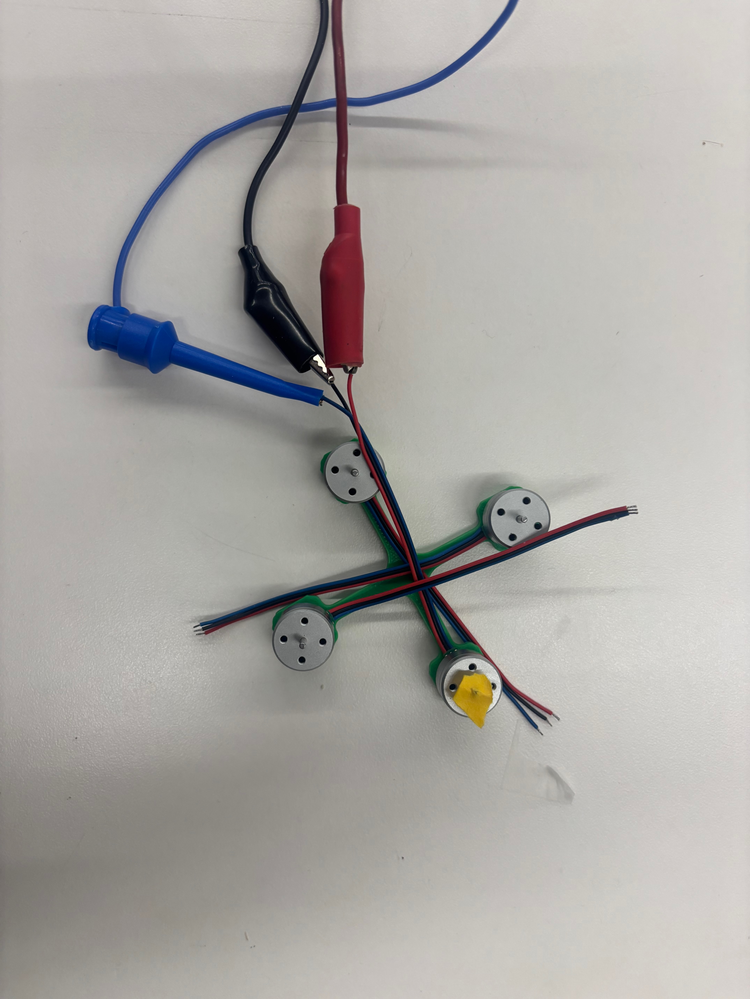
Brushless motors mounted on the printed frame
Updated Frame Design
After mounting the motors it became clear the original hole layout needed adjustment. Two changes were made: the mounting holes were rotated 45° to better align with the motor bolt pattern, and small inset recesses were added around each hole to seat the motor shaft flush with the arm surface.
Click and drag to rotate • Scroll to zoom • Right-click drag to pan
ESC Motor Test — HobbyKing 20A UBEC
I attempted to spin one brushless motor using a HobbyKing 20A UBEC ESC, but could not get it to arm correctly. The root cause was insufficient battery voltage: the only cells on hand were 3.7 V single-cell LiPos. I tried serialising three of them with copper tape to reach ~11 V, but the connection was not reliable enough to supply the current the ESC required to arm.
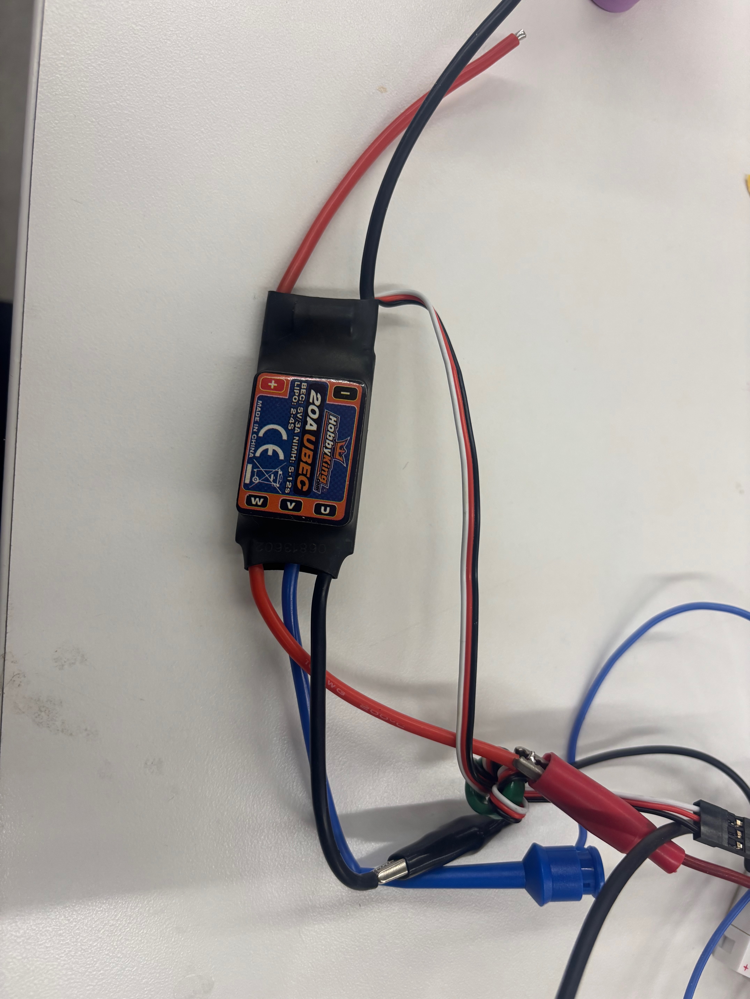
HobbyKing 20A UBEC ESC
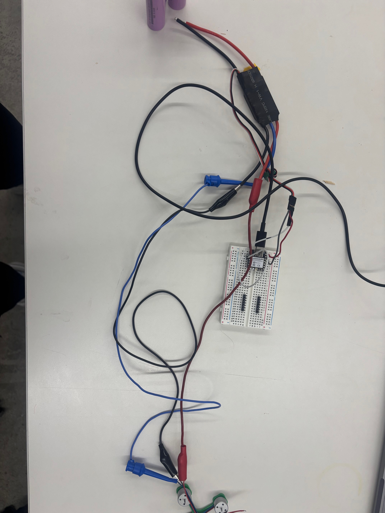
Bird's-eye view — ESC connected to motors
Updated Firmware
Key changes from the original: PWM range tightened to the standard ESC window (1000 – 2000 µs), servos now initialise to 0° (throttle-off), and the camera firmware has been completely rewritten for the XIAO ESP32S3 Sense (different pin map, PSRAM-aware, task-per-client streaming).
/*
* Drone MVP — 4-Servo Controller
* Board : ESP32-C3 (XIAO variant)
* Libs : ESP32Servo, WebSockets (by Markus Sattler)
*
* Wiring (XIAO ESP32-C3):
* Servo 0 (Front-Left) → D2 / GPIO 4
* Servo 1 (Front-Right) → D3 / GPIO 5
* Servo 2 (Rear-Left) → D4 / GPIO 6
* Servo 3 (Rear-Right) → D5 / GPIO 7
* All servo power rails → external 5V BEC (NOT the XIAO 3.3V pin)
* Common GND between XIAO and servo power supply
*/
#include "ServoController.h"
#include "DroneServer.h"
const int SERVO_PINS[ServoController::COUNT] = {4, 5, 6, 7};
const int PWM_MIN_US = 1000;
const int PWM_MAX_US = 2000;
const char* AP_SSID = "DroneControl";
const char* AP_PASSWORD = "********";
const IPAddress AP_IP(192, 168, 4, 1);
ServoController servos(SERVO_PINS, PWM_MIN_US, PWM_MAX_US);
DroneServer drone(AP_SSID, AP_PASSWORD, AP_IP, servos);
void setup() {
Serial.begin(115200);
servos.begin();
drone.begin();
}
void loop() {
drone.loop();
}#pragma once
#include <ESP32Servo.h>
class ServoController {
public:
static const uint8_t COUNT = 4;
ServoController(const int pins[COUNT], int minUs, int maxUs)
: _minUs(minUs), _maxUs(maxUs) {
for (int i = 0; i < COUNT; i++) _pins[i] = pins[i];
}
void begin() {
for (int i = 0; i < COUNT; i++) {
_servos[i].setPeriodHertz(50);
_servos[i].attach(_pins[i], _minUs, _maxUs);
move(i, 0);
}
}
void move(uint8_t index, int angle) {
if (index >= COUNT) return;
angle = constrain(angle, 0, 180);
_angles[index] = angle;
_servos[index].write(angle);
Serial.printf("Servo %d -> %d deg\n", index, angle);
}
int getAngle(uint8_t index) const {
if (index >= COUNT) return 0;
return _angles[index];
}
private:
Servo _servos[COUNT];
int _pins[COUNT];
int _angles[COUNT] = {0, 0, 0, 0};
int _minUs, _maxUs;
};#pragma once
#include <WiFi.h>
#include <WebServer.h>
#include <WebSocketsServer.h>
#include "index.h"
#include "ServoController.h"
class DroneServer {
public:
DroneServer(const char* ssid, const char* password, IPAddress ip, ServoController& servos)
: _ssid(ssid), _password(password), _ip(ip), _servos(servos),
_http(80), _ws(81) {
_instance = this;
}
void begin() {
WiFi.mode(WIFI_AP);
WiFi.softAPConfig(_ip, _ip, IPAddress(255, 255, 255, 0));
WiFi.softAP(_ssid, _password);
Serial.print("AP IP: ");
Serial.println(WiFi.softAPIP());
_http.on("/", HTTP_GET, []() {
_instance->_http.send_P(200, "text/html", INDEX_HTML);
});
_http.begin();
_ws.onEvent(_wsEvent);
_ws.begin();
}
void loop() {
_http.handleClient();
_ws.loop();
}
private:
inline static DroneServer* _instance = nullptr;
static void _wsEvent(uint8_t clientId, WStype_t type, uint8_t* payload, size_t length) {
if (type == WStype_TEXT) {
_instance->_handleMessage(String((char*)payload));
} else if (type == WStype_CONNECTED) {
IPAddress ip = _instance->_ws.remoteIP(clientId);
Serial.printf("WS client %d connected from %s\n", clientId, ip.toString().c_str());
} else if (type == WStype_DISCONNECTED) {
Serial.printf("WS client %d disconnected\n", clientId);
}
}
void _handleMessage(String msg) {
int sep = msg.indexOf(':');
if (sep < 1) return;
int index = msg.substring(0, sep).toInt();
int angle = msg.substring(sep + 1).toInt();
_servos.move(index, angle);
}
const char* _ssid;
const char* _password;
IPAddress _ip;
ServoController& _servos;
WebServer _http;
WebSocketsServer _ws;
};#pragma once
const char INDEX_HTML[] PROGMEM = R"rawliteral(
<!DOCTYPE html>
<html lang="en">
<head>
<meta charset="UTF-8" />
<meta name="viewport" content="width=device-width, initial-scale=1.0" />
<title>Drone Control</title>
<style>
* { box-sizing: border-box; margin: 0; padding: 0; }
body {
font-family: 'Segoe UI', sans-serif;
background: #0f0f0f; color: #e0e0e0;
display: flex; flex-direction: column; align-items: center;
min-height: 100vh; padding: 2rem 1rem; gap: 1.5rem;
}
h1 { font-size: 1.6rem; letter-spacing: 0.1em; color: #fff; }
#status { font-size: 0.85rem; color: #888; }
#status.connected { color: #4caf50; }
#status.disconnected { color: #f44336; }
.fpv-wrap { width: 100%; max-width: 640px; display: flex; flex-direction: column; gap: 0.6rem; }
.fpv-screen {
width: 100%; aspect-ratio: 16/9; background: #111;
border: 1px solid #2a2a2a; border-radius: 12px;
overflow: hidden; display: flex; align-items: center;
justify-content: center; position: relative;
}
.fpv-screen img { width: 100%; height: 100%; object-fit: cover; display: none; }
.fpv-no-signal { display: flex; flex-direction: column; align-items: center; gap: 0.5rem; color: #333; font-size: 0.9rem; }
.fpv-no-signal svg { opacity: 0.3; }
.master-card {
width: 100%; max-width: 640px; background: #1c1c1c;
border: 1px solid #2196f3; border-radius: 12px;
padding: 1.2rem 1.5rem; display: flex; flex-direction: column; align-items: center; gap: 0.8rem;
}
.master-card h2 { font-size: 0.85rem; letter-spacing: 0.12em; color: #2196f3; }
.grid { display: grid; grid-template-columns: 1fr 1fr; gap: 1.5rem; width: 100%; max-width: 640px; }
.card {
background: #1c1c1c; border: 1px solid #2a2a2a; border-radius: 12px;
padding: 1.5rem; display: flex; flex-direction: column; align-items: center; gap: 1rem;
}
.card h2 { font-size: 1rem; color: #aaa; }
.angle-display { font-size: 2.4rem; font-weight: 700; color: #fff; min-width: 4ch; text-align: center; }
.angle-display span { font-size: 1rem; color: #666; }
input[type="range"] { -webkit-appearance: none; width: 100%; height: 6px; border-radius: 3px; background: #333; outline: none; cursor: pointer; }
input[type="range"]::-webkit-slider-thumb { -webkit-appearance: none; width: 20px; height: 20px; border-radius: 50%; background: #2196f3; cursor: pointer; }
.btn-center { padding: 0.4rem 1rem; font-size: 0.8rem; border: 1px solid #333; border-radius: 6px; background: #252525; color: #aaa; cursor: pointer; }
.btn-row { display: flex; gap: 1rem; }
.btn-action { padding: 0.7rem 2rem; font-size: 0.95rem; border-radius: 8px; cursor: pointer; }
.btn-hover { border: 1px solid #4caf50; background: transparent; color: #4caf50; }
.btn-hover:hover, .btn-hover.active { background: #4caf50; color: #fff; }
.btn-center-all { border: 1px solid #2196f3; background: transparent; color: #2196f3; }
.btn-center-all:hover { background: #2196f3; color: #fff; }
</style>
</head>
<body>
<h1>DRONE CONTROL</h1>
<div id="status" class="disconnected">Connecting...</div>
<div class="fpv-wrap">
<div class="fpv-screen">
<img id="fpv-img" src="http://192.168.4.2/stream" style="display:block;width:100%;height:100%;object-fit:cover;" />
<div class="fpv-no-signal" id="fpv-placeholder" style="display:none;">
<svg width="48" height="48" viewBox="0 0 24 24" fill="none" stroke="currentColor" stroke-width="1.5">
<path d="M15 10l4.553-2.07A1 1 0 0121 8.87v6.26a1 1 0 01-1.447.9L15 14M3 8h12v8H3z" stroke-linecap="round" stroke-linejoin="round"/>
</svg>
NO SIGNAL
</div>
</div>
</div>
<div class="master-card">
<h2>ALL SERVOS</h2>
<div class="angle-display" id="val-master">0<span>°</span></div>
<input type="range" min="0" max="180" value="0" id="slider-master" />
</div>
<div class="grid" id="grid"></div>
<div class="btn-row">
<button class="btn-action btn-hover" id="hover-btn" onclick="toggleHover()">Hover</button>
<button class="btn-action btn-center-all" onclick="centerAll()">Center All</button>
</div>
<script>
const SERVO_LABELS = ['Front-Left', 'Front-Right', 'Rear-Left', 'Rear-Right'];
const sliders = [], displays = [];
const grid = document.getElementById('grid');
for (let i = 0; i < 4; i++) {
const card = document.createElement('div');
card.className = 'card';
card.innerHTML = `<h2>${SERVO_LABELS[i]}</h2><div class="angle-display" id="val${i}">0<span>°</span></div><input type="range" min="0" max="180" value="0" id="slider${i}" /><button class="btn-center" onclick="centerServo(${i})">Center</button>`;
grid.appendChild(card);
const s = document.getElementById(`slider${i}`);
const d = document.getElementById(`val${i}`);
sliders.push(s); displays.push(d);
s.addEventListener('input', () => { d.innerHTML = s.value + '<span>°</span>'; sendServo(i, +s.value); });
}
const masterSlider = document.getElementById('slider-master');
const masterDisplay = document.getElementById('val-master');
masterSlider.addEventListener('input', () => {
const a = +masterSlider.value;
masterDisplay.innerHTML = a + '<span>°</span>';
for (let i = 0; i < 4; i++) { sliders[i].value = a; displays[i].innerHTML = a + '<span>°</span>'; sendServo(i, a); }
});
const ws = new WebSocket(`ws://${location.hostname}:81`);
const statusEl = document.getElementById('status');
ws.onopen = () => { statusEl.textContent = 'Connected'; statusEl.className = 'connected'; };
ws.onclose = () => { statusEl.textContent = 'Disconnected — reload to reconnect'; statusEl.className = 'disconnected'; };
ws.onerror = () => { statusEl.textContent = 'Connection error'; statusEl.className = 'disconnected'; };
function sendServo(i, a) { if (ws.readyState === WebSocket.OPEN) ws.send(`${i}:${a}`); }
function setAngle(i, a) { sliders[i].value = a; displays[i].innerHTML = a + '<span>°</span>'; sendServo(i, a); }
function centerServo(i) { setAngle(i, 90); }
function centerAll() {
masterSlider.value = 90;
masterDisplay.innerHTML = '90<span>°</span>';
for (let i = 0; i < 4; i++) centerServo(i);
}
let hoverTimer = null, hoverPhase = 0;
function toggleHover() {
const btn = document.getElementById('hover-btn');
if (hoverTimer) {
clearInterval(hoverTimer); hoverTimer = null;
btn.textContent = 'Hover'; btn.classList.remove('active'); centerAll();
} else {
hoverPhase = 0; btn.textContent = 'Stop Hover'; btn.classList.add('active');
hoverTimer = setInterval(() => {
hoverPhase += 0.06;
const a = Math.round(90 + 30 * Math.sin(hoverPhase));
masterSlider.value = a; masterDisplay.innerHTML = a + '<span>°</span>';
for (let i = 0; i < 4; i++) setAngle(i, a);
}, 50);
}
}
(function retryStream() {
const img = document.getElementById('fpv-img');
const ph = document.getElementById('fpv-placeholder');
img.onerror = () => {
img.style.display = 'none'; ph.style.display = 'flex';
setTimeout(() => { img.src = 'http://192.168.4.2/stream?' + Date.now(); img.style.display = 'block'; ph.style.display = 'none'; }, 3000);
};
})();
</script>
</body>
</html>
)rawliteral";/*
* XIAO ESP32-S3 Sense — MJPEG Stream Server
* Board : XIAO ESP32S3 (Seeed Studio)
*
* Connects to the DroneControl WiFi AP and serves an MJPEG stream
* at http://192.168.4.2/stream
*
* Board settings (Arduino IDE):
* Board : XIAO_ESP32S3
* PSRAM : OPI PSRAM ← required
* USB CDC On Boot : Enabled
* Partition Scheme : Huge APP (3MB No OTA/1MB SPIFFS)
*/
#include "esp_camera.h"
#include <WiFi.h>
const char* WIFI_SSID = "DroneControl";
const char* WIFI_PASS = "********";
const IPAddress CAM_IP (192, 168, 4, 2);
const IPAddress GATEWAY(192, 168, 4, 1);
const IPAddress SUBNET (255, 255, 255, 0);
// XIAO ESP32-S3 Sense pin map
#define PWDN_GPIO_NUM -1
#define RESET_GPIO_NUM -1
#define XCLK_GPIO_NUM 10
#define SIOD_GPIO_NUM 40
#define SIOC_GPIO_NUM 39
#define Y9_GPIO_NUM 48
#define Y8_GPIO_NUM 11
#define Y7_GPIO_NUM 12
#define Y6_GPIO_NUM 14
#define Y5_GPIO_NUM 16
#define Y4_GPIO_NUM 18
#define Y3_GPIO_NUM 17
#define Y2_GPIO_NUM 15
#define VSYNC_GPIO_NUM 38
#define HREF_GPIO_NUM 47
#define PCLK_GPIO_NUM 13
WiFiServer server(80);
bool initCamera() {
camera_config_t config;
config.ledc_channel = LEDC_CHANNEL_0; config.ledc_timer = LEDC_TIMER_0;
config.pin_d0 = Y2_GPIO_NUM; config.pin_d1 = Y3_GPIO_NUM;
config.pin_d2 = Y4_GPIO_NUM; config.pin_d3 = Y5_GPIO_NUM;
config.pin_d4 = Y6_GPIO_NUM; config.pin_d5 = Y7_GPIO_NUM;
config.pin_d6 = Y8_GPIO_NUM; config.pin_d7 = Y9_GPIO_NUM;
config.pin_xclk = XCLK_GPIO_NUM; config.pin_pclk = PCLK_GPIO_NUM;
config.pin_vsync = VSYNC_GPIO_NUM; config.pin_href = HREF_GPIO_NUM;
config.pin_sscb_sda = SIOD_GPIO_NUM; config.pin_sscb_scl = SIOC_GPIO_NUM;
config.pin_pwdn = PWDN_GPIO_NUM; config.pin_reset = RESET_GPIO_NUM;
config.xclk_freq_hz = 20000000;
config.pixel_format = PIXFORMAT_JPEG;
config.grab_mode = CAMERA_GRAB_LATEST;
if (psramFound()) {
config.frame_size = FRAMESIZE_VGA; config.jpeg_quality = 12;
config.fb_count = 2; config.fb_location = CAMERA_FB_IN_PSRAM;
} else {
config.frame_size = FRAMESIZE_QVGA; config.jpeg_quality = 16;
config.fb_count = 1; config.fb_location = CAMERA_FB_IN_DRAM;
}
esp_err_t err = esp_camera_init(&config);
if (err != ESP_OK) { Serial.printf("Camera init failed: 0x%x\n", err); return false; }
return true;
}
void streamClient(WiFiClient& client) {
client.print(
"HTTP/1.1 200 OK\r\n"
"Access-Control-Allow-Origin: *\r\n"
"Content-Type: multipart/x-mixed-replace; boundary=frame\r\n\r\n"
);
while (client.connected()) {
camera_fb_t* fb = esp_camera_fb_get();
if (!fb) break;
client.printf("--frame\r\nContent-Type: image/jpeg\r\nContent-Length: %u\r\n\r\n", fb->len);
client.write(fb->buf, fb->len);
client.print("\r\n");
esp_camera_fb_return(fb);
}
}
void clientTask(void* arg) {
WiFiClient* client = (WiFiClient*)arg;
String reqLine = client->readStringUntil('\n');
while (client->available()) {
String line = client->readStringUntil('\n');
if (line == "\r" || line.length() == 0) break;
}
if (reqLine.indexOf("/stream") >= 0) {
streamClient(*client);
} else {
client->print("HTTP/1.1 200 OK\r\nContent-Type: text/html\r\n\r\n"
"<html><body style='margin:0;background:#000'>"
"<img src='/stream' style='width:100%;height:100vh;object-fit:contain'/>"
"</body></html>");
}
client->stop();
delete client;
vTaskDelete(NULL);
}
void setup() {
Serial.begin(115200);
if (!initCamera()) { while (true) delay(1000); }
WiFi.mode(WIFI_STA);
WiFi.config(CAM_IP, GATEWAY, SUBNET);
WiFi.begin(WIFI_SSID, WIFI_PASS);
while (WiFi.status() != WL_CONNECTED) { delay(500); Serial.print("."); }
Serial.printf("\nStream at: http://%s/stream\n", WiFi.localIP().toString().c_str());
server.begin();
}
void loop() {
WiFiClient client = server.accept();
if (client) {
WiFiClient* c = new WiFiClient(client);
xTaskCreate(clientTask, "cam_client", 4096, c, 1, NULL);
}
}What's Next
An AIO (All-In-One) flight controller board is on order. It integrates the ESCs, power distribution, and an IMU on a single board, which should finally allow proper closed-loop control of all four brushless motors.
- AIO board — waiting on delivery; will replace the individual ESC + breadboard wiring with a single integrated board
- Gyroscope / IMU — needed for stabilisation; will be integrated once the AIO board arrives (many AIO boards include one)
- Propellers — must be ordered online; printed propellers at this scale come out too thin and snap immediately
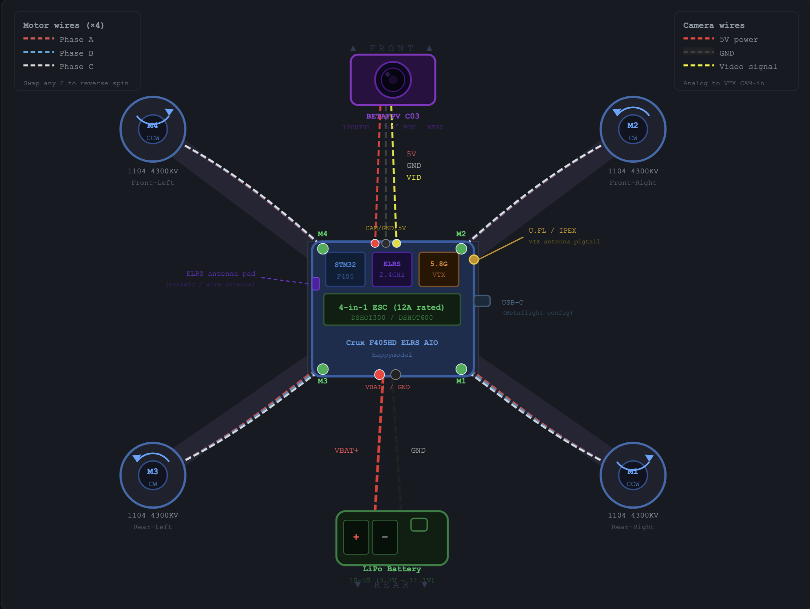
Blueprint — target drone configuration